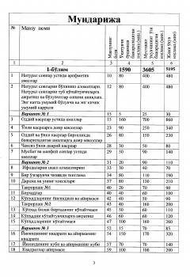

MVMatematikadan algebra va trigonometriyaga oid misol hamda masalalar to'plami.
Ushbu kitob matematika fanidan turli mavzular bo'yicha misol va masalalar to'plamini o'z ichiga oladi. Unda algebra, tenglamalar, tengsizliklar, progressiyalar hamda trigonometriyaga oid topsiriqlar va test variantlari o'rin olgan. O'quvchilar va abituriyentlarning matematika fanidan bilimini oshirish va imtihonlarga tayyorlanishiga xizmat qiladi.